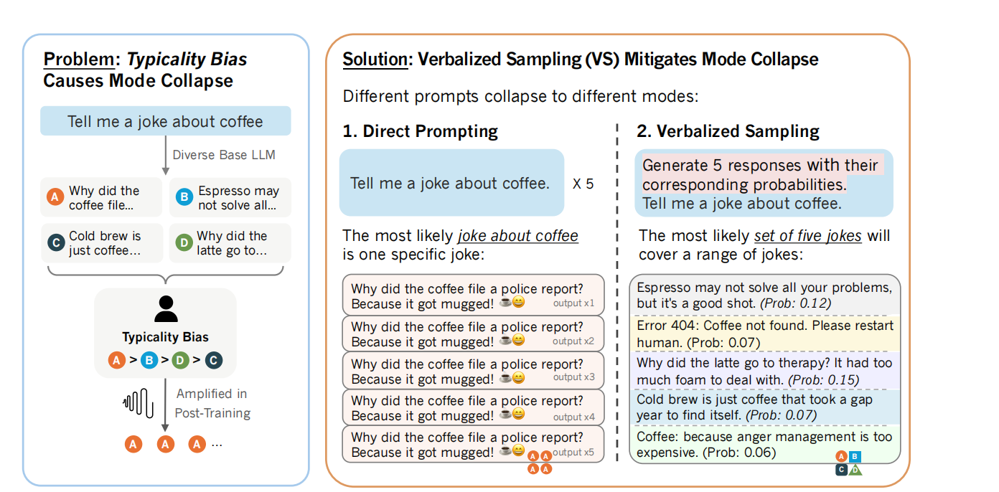
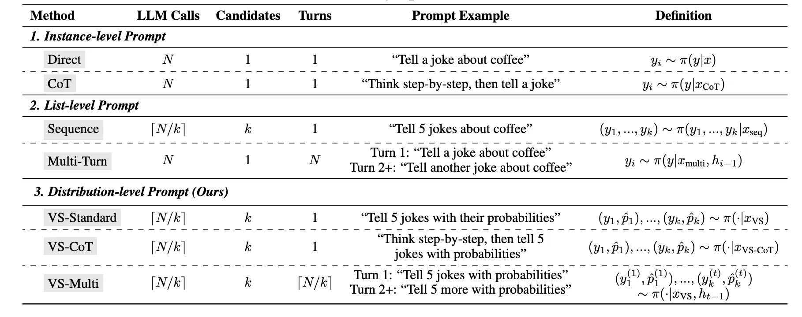
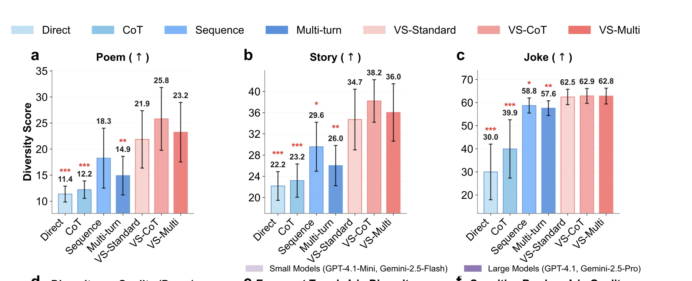
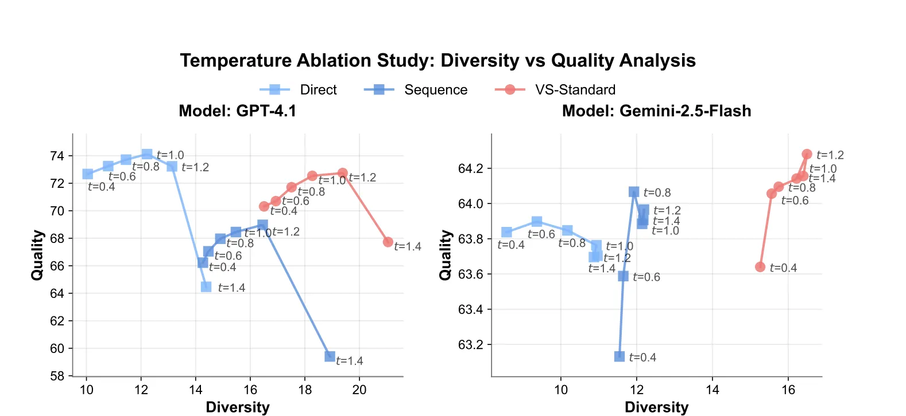
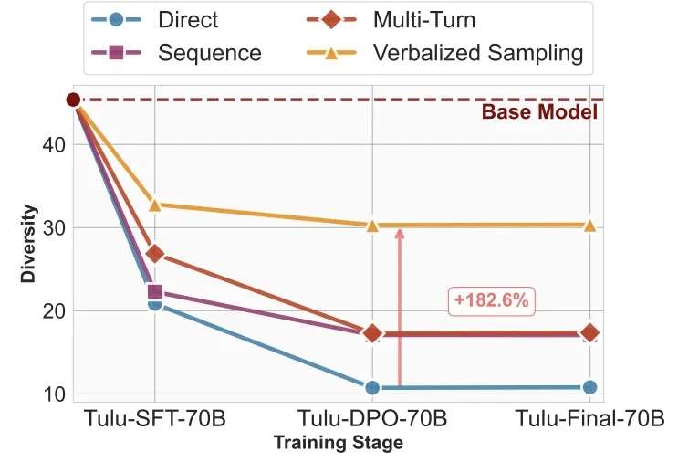
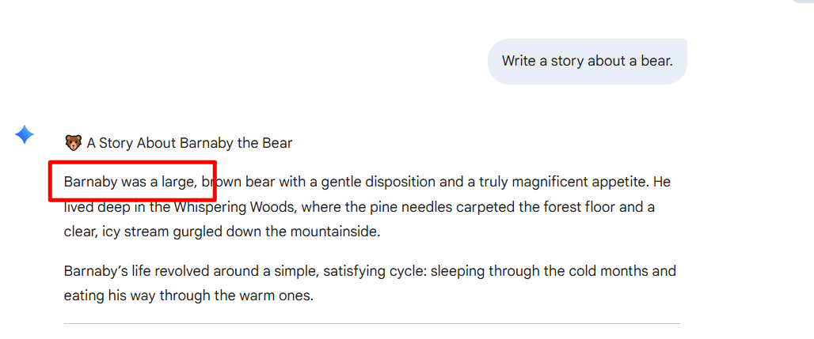
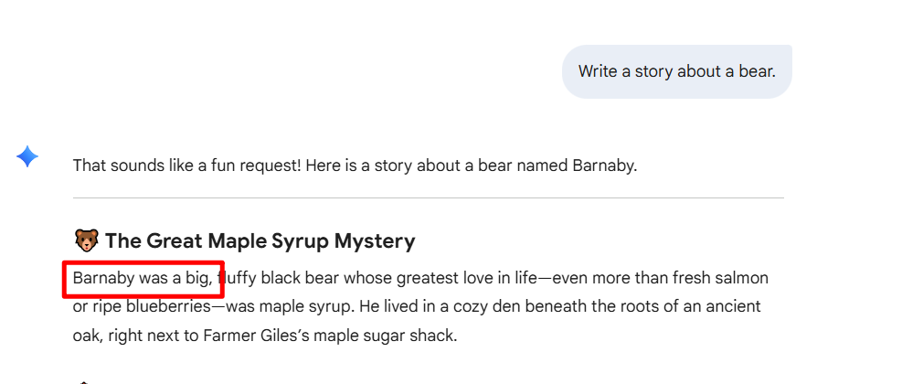

VERBALIZED SAMPLING: HOW TO MITIGATE MODE COLLAPSE AND UNLOCK LLM DIVERSITY

我的评价
作者说LLM生成内容的多样性不好，是因为数据本身就带有人类的偏好。数据本身的偏好是模型多样性缺失的原因，是本文要证明的内容。按照这个分析，作者大概会构造一些偏好数据，然后训练模型，证明这种多样性确实源于偏好数据。
作者改进模型数据多样性的方法，不是通过output的采样，而是使用Prompt，让模型输出多个回答并带有概率分布，这种方式很难理解为什么这么做。明明使用llm的参数temperature改变采样策略就可以做到，为什么还要这种Prompt呢？(作者标榜Prompt可以做到Training-Free 但是采样策略也是啊 而且更可控…)
总结来说，这篇文章有点像是独立的两篇文章。前半段对Training Data的bias的分析不够深入，只是针对一个数据集做了分析，通过拟合，证明了数据确实有bias。在我看来，还应该对bias data对模型的影响进行更加细致的分析（比如通过消除bias data中的bias，重新训练，看能否消除这种diversity的缺失）。后半段则是对VERBALIZED SAMPLING（一种带有概率的Prompt）来缓解模型diversity的降低。在我看来，后半段完全可以单独弄一个文章，分析temperature / reward model / training algforithm / prompt等对模型输出diversity的影响，看看哪个更有效。
作为一篇ICLR 2026在投的文章，从OpenReview上面的评论，也可以看出和评价类似的Reviewer comment。不过这确实是一篇实验非常详实，消融实验设计也很合理的好文章。
当前存在什么问题
在创意性的问题，比如“tell me a joke” “write a story about bear”… 场景下，我们需要 LLM 给出尽可能 diverse 的 answer。但是前人研究发现，LLM 在训练的过程中，生成内容的 diversity 会降低。过去的研究集中在算法层面，认为 trainging algorithm 存在天然的缺陷，比如单一的奖励信号，RLHF 中的 KL 正则化项等等，他们天然的就会在训练的过程中降低 model output diversity。因此，解决的方案就是从算法角度下手，尽可能优化 sft rl 的过程。
本文想要从 Data 的角度解释这种 diversity 的缺失，同时提出一些提高 diversity 的方法。
本文打算通过什么思路解决
本文做出假设：模型的训练数据本身是带有 bias 的。人类在标注 RLHF 数据的时候，做排序天然的就有 bias。比如更喜欢比较熟悉的语法，熟悉的结构，简单易懂的呈现方式等等。本文通过分析一个 Nvidia 团队的数据集HELPSTEER，证明这种数据bias 的存在。这里通过理论推导和拟合，发现确实存在。
$$r(x, y) = r_{\text{true}}(x, y) + \alpha \log \pi_{\text{ref}}(y | x) + \epsilon(x) \tag{1}$$
研究人员使用了 HELPSTEER 数据集。这个数据集非常特殊，因为它对同一个回答给了两个不同的打分： - Correctness（正确性）： 对应公式中的 rtrue（真实任务效用）。 - Helpfulness（有用性）： 对应公式中的 r（最终奖励，即人类给出的总分）
研究人员从数据集中筛选出了 6,874 对回答。这些配对有一个关键特征：“same correctness ratings” (拥有相同的正确性评分)这意味着对于每一对回答 (y1, y2)，它们的真实效用是相等的：rtrue(y1) = rtrue(y2)
假设有两个回答 A 和 B，它们的正确性评分一样，但人类给的总分（有用性）不一样。根据公式 (1)：回答 A 的得分： rA = rtrue + α ⋅ TypicalityA回答 B 的得分： rB = rtrue + α ⋅ TypicalityB当我们把这两个式子相减（比较 A 和 B）：rA − rB = (rtrue − rtrue) + α(TypicalityA − TypicalityB)由于正确性相同，rtrue 互相抵消为 0，剩下的就是：ΔReward = α × ΔTypicality
该思路会遇到什么挑战
- 如何证明 data bias 的存在。
- 找到一个新的方法，能够提高模型的 diversity
本文通过什么手段克服该挑战
- 本文通过理论推导 bias 公式，然后使用HELPSTEER 数据集做数据拟合的验证，表明这种数据的 bias 的存在。
- 前人的解决方案大多集中在 algorithm 或者 inference setting (sampling 策略)。本文提出带有概率输出的 prompt 来解决。如:“Generate 5 responses with their corresponding probabilities. Tell me a joke about coffee.”
本文如何通过实验论证了该方案的优越性
实验目标：证明该 prompt 能够提高 LLM 输出的 diversity。
实验的 benchmark：诗歌续写，故事生成，讲笑话。
怎么 evaluate 模型的输出呢： 多样性：把模型的输出做 Embedding，通过相似度计算来反映输出的 diversity 输出质量：只输出多样的内容是不够的，我们还需要保证 quality。本文把 claude 模型 LLM as judge，从几个语言学上的维度，评估输出的质量。
实验设置：在下列模型上，不同的 method （看Prompt Example column）跑 benchmark，使用 evaluate 的方法，计算输出的多样性和质量，绘制图像。 Gemini-2.5-Flash, Gemini-2.5-Pro Claude Series (Claude-3.7-Sonnet, Claude-4-Sonnet) open ones like (Llama-3.1-70B-Instruct and Qwen3-235B-A22B-2507-Instruct-2507) reasoning models like (OpenAI o3 and DeepSeek R1)  实验结果：VS（也就是本文提出的方法）在各个 benchmark 上的表现都更优 

消融实验：
- llm params: temparature LLM 的 api 中可以调节 temperature 参数来调整模型输出的 diversity。因此需要消融 temperature。本文通过设置不同的 temperature 进行相同实验，消除该参数对方案有效性的影响。可以看到，VS 方案在各个 temperature 下的 diversity + quality 的表现依然是最佳的。 
- llm 不同的 traing stage 为了证明这种 VS 方法的有效性，本文在 LLM 不同的训练阶段 （SFT RLHF RLVR）都进行了 diversity 的测试，发现该方法在不同阶段都有效果。如图，随着训练的进行，Base Model 的 diversity 下降，但是 VS 方法的下降是最慢的，缓解了模型 diversity 的下降。 
我的思考
我在gemini-2.5-flash模型上试了一下，“Write a story about a bear.” 会得到如下结果 确实会有可能得到相似的回答：  
不过这里只是粗略的看，如何评估两段文字的语义相似性 也是一个值得研究的问题
研究RLHF阶段的training data，分析到底什么样的数据会更优先，有没有搞头？可能需要分析排在前面的answer的通用范式（可能有总结 结构比较清晰 有各种tag分点之类的），也需要评估排在前面的answer是不是真的质量高于后面的，还是说因为human preference打分比较靠前。（这里你可能就要找一个方法 评估回答的质量–》 如果让LLM judge，那是不是就会出问题–》本身就是偏好数据RLHF训练出来的 会不会就给这里的排在前面的answer打高分呢 ）
对比现有的提升模型输出多样性的方法，找到最有效的那个，不知道算不算创新，能不能发文章
- 本文提及的论文中，可以继续深入了解的内容：